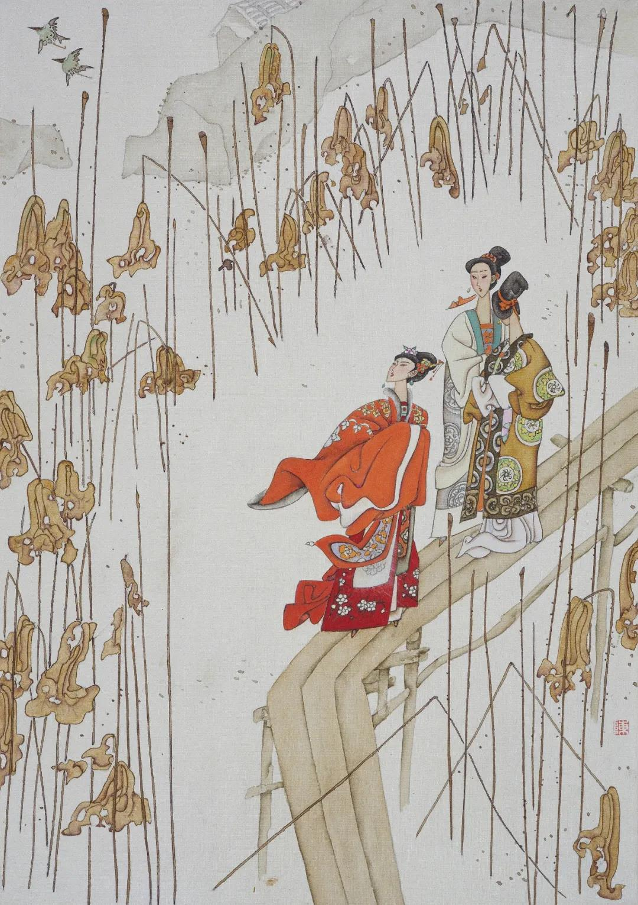

第九十六回 春梅姐游旧家池馆 杨光彦作当面豺狼
第九十六回 春梅姐游旧家池馆 杨光彦作当面豺狼#
词曰：
人生千古伤心事，还唱《后庭花》。旧时王谢，堂前燕子，飞向谁家？
恍然一梦，仙肌胜雪，宫鬓堆雅。江州司马，青衫泪湿，想在天涯。
右调《青衫湿》
话说光阴迅速，日月如梭，又早到正月二十一日。春梅和周守备说了，备一张祭桌，四样羹果，一坛南酒，差家人周义送与吴月娘。一者是西门庆三周年，二者是孝哥儿生日。月娘收了礼物，打发来人帕一方，银三钱。这边连忙就使玳安儿穿青衣，具请书儿请去。上写着：
重承厚礼，感感。即刻舍具菲酌，奉酬腆仪。仰希高轩俯临，不外，幸甚。西门吴氏端肃拜请大德周老夫人妆次。
春梅看了，到日中才来。戴着满头珠翠金凤头面钗梳，胡珠环子。身穿大红通袖、四兽朝麒麟袍儿，翠蓝十样锦百花裙，玉玎当禁步，束着金带。坐着四人大轿，青段销金轿衣。军牢执藤棍喝道，家人伴当跟随，抬着衣匣。后边两顶家人媳妇小轿儿，紧紧跟随。吴月娘这边请人吴大妗子相陪，又叫了四个唱的弹唱。听见春梅来到，月娘亦盛妆缟素打扮，头上五梁冠儿，戴着稀稀几件金翠首饰，上穿白绫袄，下边翠蓝段子裙，与大妗子迎接至前厅。春梅大轿子抬至仪门首，才落下轿来。两边家人围着，到于厅上叙礼，向月娘插烛也似拜下去。月娘连忙答礼相见，说道：“向日有累姐姐费心，粗尺头又不肯受。今又重承厚礼祭桌，感激不尽。”春梅道：“惶恐。家官府没甚么，这些薄礼，表意而已。一向要请奶奶过去，家官府不时出巡，所以不曾请得。”月娘道：“姐姐，你是几时好日子？我只到那日买礼看姐姐去罢。”春梅道：“奴贱日是四月廿五日。”月娘道：“奴到那日已定去。”
两个叙礼毕，春梅务要把月娘让起，受了两礼。然后吴大妗子相见，亦还下礼去。春梅道：“你看大妗子，又没正经。”一手扶起受礼。大妗子再三不肯，止受了半礼。一面让上坐，月娘和大妗子主位相陪。然后家人、媳妇、丫鬟、养娘，都来参见。春梅见了奶子如意儿抱着孝哥儿，吴月娘道：“小大哥还不来与姐姐磕个头儿，谢谢姐姐。今日来与你做生日。”那孝哥儿真个下如意儿身来，与春梅唱喏。月娘道：“好小厮，不与姐姐磕头，只唱喏。”那春梅连忙向袖中摸出一方锦手帕，一副金八吉祥儿，教替他塞帽儿上。月娘道：“又教姐姐费心。”又拜谢了。落后小玉、奶子来见磕头。春梅与了小玉一对头簪子，与了奶子两枝银簪儿。月娘道：“姐姐，你还不知，奶子与了来兴儿做媳妇儿了。来兴儿那媳妇害病没了。”春梅道：“他一心要在咱家，倒也好。”一面丫鬟拿茶上来，吃了茶，月娘道：“请娘娘后边明间内坐罢，这客位内冷。”
春梅来后边西门庆灵前，又早点起灯烛，摆下桌面祭礼。春梅烧了纸，落了几点眼泪。然后周围设放围屏，火炉内生起炭火，安放八大仙桌席，摆茶上来。无非是细巧蒸酥，希奇果品，绝品芽茶。月娘和大妗子陪着吃了茶，让春梅进上房里换衣裳。脱了上面袍儿，家人媳妇开衣匣，取出衣服，更换了一套绿遍地锦妆花袄儿，紫丁香色遍地金裙。在月娘房中坐着，说了一回，月娘因问道：“哥儿好么？今日怎不带他来这里走走？”春梅道：“不是也带他来与奶奶磕头，他爷说天气寒冷，怕风冒着他。他又不肯在房里，只要那当直的抱出来厅上外边走。这两日，不知怎的，只是哭。”月娘道：“他周爷也好大年纪，得你替他养下这点孩子也彀了，也是你裙带上的福。说他孙二娘还有位姐儿，几岁儿了？”春梅道：“他二娘养的叫玉姐，今年交生四岁。俺这个叫金哥。”月娘道：“说他周爷身边还有两位房里姐儿？”春梅道：“是两个学弹唱的丫头子，都有十六七岁，成日淘气在那里。”月娘道：“他爷也常往他身边去不去？”春梅道：“奶奶，他那里得工夫在家？多在外，少在里。如今四外好不盗贼生发，朝廷敕书上，又教他兼管许多事情：镇守地方，巡理河道，提拿盗贼，操练人马。常不时往外出巡几遭，好不辛苦哩。”说毕，小玉又拿茶来吃了。春梅向月娘说：“奶奶，你引我往俺娘那边花园山子下走走。”月娘道：“我的姐姐，还是那咱的山子花园哩！自从你爹下世，没人收拾他，如今丢搭的破零零的。石头也倒了，树木也死了，俺等闲也不去了。”春梅道：“不妨，奴就往俺娘那边看看去。”这月娘强不过，只得叫小玉拿花园门山子门钥匙，开了门，月娘、大妗子陪春梅，到里边游看了半日。但见：
垣墙欹损，台榭歪斜。两边画壁长青笞，满地花砖生碧草。山前怪石遭塌毁，不显嵯峨；亭内凉床被渗漏，已无框档。石洞口蛛丝结网，鱼池内虾蟆成群。狐狸常睡卧云亭，黄鼠往来藏春阁。料想经年无人到，也知尽日有云来。

春梅看了一回，先走到李瓶儿那边。见楼上丢着些折桌、坏凳、破椅子，下边房都空锁着，地下草长的荒荒的。方来到他娘这边，楼上还堆着些生药香料，下边他娘房里，止有两座厨柜，床也没了。因问小玉：“俺娘那张床往那去了？怎的不见？”小玉道：“俺三娘嫁人，赔了俺三娘去了。”月娘走到跟前说：“因你爹在日，将他带来那张八步床赔了大姐在陈家，落后他起身，却把你娘这张床赔了他，嫁人去了。”春梅道：“我听见大姐死了，说你老人家把床还抬的来家了。”月娘道：“那床没钱使，只卖了八两银子，打发县中皂隶，都使了。”春梅听言，点了点头儿。那星眼中由不的酸酸的，口中不言，心内暗道：“想着俺娘那咱，争强不伏弱的问爹要买了这张床。我实承望要回了这张床去，也做他老人家一念儿，不想又与了人去了。”由不的心下惨切。又问月娘：“俺六娘那张螺甸床怎的不见？”月娘道：“一言难尽。自从你爹下世，日逐只有出去的，没有进来的。常言家无营活计，不怕斗量金。也是家中没盘缠，抬出去交人卖了。”春梅问：“卖了多少银子？”月娘道：“止卖了三十五两银子。”春梅道：“可惜了，那张床，当初我听见爹说，值六十两多银子，只卖这些儿。早知你老人家打发，我到与你老人家三四十两银子要了也罢。”月娘道：“好姐姐，人那有早知道的？”一面叹息了半日。
只见家人周仁走来接，说：“爷请奶奶早些家来，哥儿寻奶奶哭哩。”这春梅就抽身往后边来。月娘叫小玉锁了花园门，同来到后边明间内。又早屏开孔雀，帘控鲛绡，摆下酒筵。两个妓女，银筝琵琶，在旁弹唱。吴月娘递酒安席，安春梅上座，春梅不肯，务必拉大妗子，同他一处坐的。月娘主位，筵前递了酒，汤饭点心，割切上席。春梅叫家人周仁，赏了厨子三钱银子。说不尽盘堆羿品，酒泛金波。当下传杯换盏，吃至晚色将落时分，只见宅内又差伴当，拿灯笼来接。月娘那里肯放，教两个妓女在跟前跪着弹唱劝酒。分付：“你把好曲儿孝顺你周奶奶一个儿。”一面叫小玉斟上大钟，放在跟前，说：“姐姐，你分付个心爱的曲儿，叫他两个唱与你下酒。”春梅道：“奶奶，奴吃不得了，怕孩儿家中寻我。”月娘道：“哥儿寻，左右有奶子看着，天色也还早哩，我晓得你好小量儿！”春梅因问那两个妓女：“你叫甚名字？是谁家的？”两个跪下说：“小的一个是韩金钏儿妹子韩玉钏儿，一个是郑爱香儿侄女郑娇儿。”春梅道：“你每会唱《懒画眉》不会？”玉钏儿道：“奶奶分付，小的两个都会。”月娘道：“你两个既会唱，斟上酒你周奶奶吃，你每慢唱。”小玉在旁连忙斟上酒，两个妓女，一个弹筝，一个琵琶，唱道：
冤家为你几时休？捱到春来又到秋。谁人知道我心头。天，害的我伶仃瘦，听和音书两泪流。从前已往诉缘由，谁想你无情把我丢！
那春梅吃过，月娘双令郑娇儿递上一杯酒与春梅。春梅道：“你老人家也陪我一杯。”两家于是都齐斟上，两个妓女又唱道：
冤家为你减风流，鹊噪檐前不肯休，死声活气没来由。天，倒惹的情拖逗，助的凄凉两泪流。从他去后意无休，谁想你辜恩把我丢。
春梅说：“奶奶，你也教大妗子吃杯儿。”月娘道：“大妗子吃不的，教他拿小钟儿陪你罢。”一面令小玉斟上大妗子一小钟儿酒。两个妓女又唱道：
冤家为你惹场忧，坐想行思日夜愁，香肌憔瘦减温柔。天，要见你不能勾，闷的我伤心两泪流。从前与你共绸缪，谁想你今番把我丢。
春梅见小玉在跟前，也斟了一大钟教小玉吃。月娘道：“姐姐，他吃不的。”春梅道：“奶奶，他也吃两三钟儿，我那咱在家里没和他吃？”于是斟上，教小玉也吃了一杯。妓女唱道：
冤家为你惹闲愁，病枕着床无了休，满腹忧闷锁眉头。天，忘了还依旧，助的我腮边两泪流。从前与你两无休，谁想你经年把我丢。
看官听说，当时春梅为甚教妓女唱此词？一向心中牵挂陈敬济，在外不得相会。情种心苗，故有所感，发于吟咏。又见他两个唱的口儿甜，乖觉，奶奶长、奶奶短奉承，心中欢喜。叫家人周仁近前来，拿出两包儿赏赐来，每人二钱银子。两个妓女放下乐器，磕头谢了。不一时，春梅起身，月娘款留不住。伴当打灯笼，拜辞出门，坐上大轿。家人媳妇，都坐上小轿。前后打着四个灯笼，军牢喝道而去。正是：时来顽铁有光辉，远去黄金无艳色。有诗为证：
点绛唇红弄玉娇，凤凰飞下品鸾箫。堂高闲把湘帘卷，燕子还来续旧巢。
且说春梅自从来吴月娘家赴席之后，因思想陈敬济，不知流落在何处。归到府中，终日只是卧床不起，心下没好气。守备察知其意，说道：“只怕思念你兄弟，不得其所。”一面叫张胜、李安来，分付道：“我一向委你寻你奶奶兄弟，如何不用心找寻？”二人告道：“小的一向找寻来，一地里寻不着下落，已回了奶奶话了。”守备道：“限你二人五日，若找寻不着，讨分晓。”这张胜、李安领了钧语下来，都带了愁颜。沿街绕巷，各处留心，找问不题。
话分两头。单表陈敬济自从守备府中打了出来，欲投宴公庙。又听见人说师父任道士死了，就害怕不敢进庙来，又没脸儿见杏庵主老，白日里到处打油飞，夜晚间还钻入冷铺中存身。一日，也是合当有事，敬济正在街上站立，只见铁指甲杨大郎，头戴新罗帽儿，身穿白绫袄子，骑着一匹驴儿，拣银鞍辔，一个小厮跟随，正从街心走过来。敬济认得是杨光彦，便向前一把手，把嚼环拉住，说道：“杨大哥，一向不见。自从清江浦把我半船货物偷拐走了，我好意往你家问，反吃你兄弟杨二风拿瓦楔钻破头，赶着打上我家门来。今日弄的我一贫如洗，你是会摇摆受用。”那杨大郎见陈敬济已自讨吃，便佯佯而笑，说：“今日晦气，出门撞见瘟死鬼，量你这饿不死贼花子，那里讨半船货？我拐了你的，你不撒手？须吃我一顿马鞭子。”敬济便道：“我如今穷了，你有银子，与我些盘缠。不然，咱到个去处讲讲。”杨大郎见他不放，跳下驴来，向他身上抽了几鞭子。喝令小厮：“与我撏了这少死的花子去！”那小厮使力把敬济推了一交，杨大郎又向前踢了几脚，踢打的敬济怪叫。须臾，围了许多人。旁边闪过一个人来，青高装帽子，勒着手帕，倒披紫袄，白布裤子，精着两条腿，趿着蒲鞋，生的阿兜眼，扫帚眉，料绰口，三须胡子，面上紫肉横生，手腕横筋竞起。吃的楞楞睁睁，提着拳头，向杨大郎说道：“你此位哥好不近理，他年少这般贫寒，你只顾打他怎的？自古嗔拳不打笑面，他又不曾伤犯着你。你有钱，看平日相交，与他些；没钱罢了，如何只顾打他？自古路见不平，也有向灯向火。”杨大郎说：“你不知，他赖我拐了他半船货，量他恁穷样，那有半船货物？”那人道：“想必他当时也是有根基人家娃娃，天生就这般穷来？阁下就是这般有钱？老兄依我，你有银子与他些盘缠罢。”那杨大郎见那人说了，袖内汗巾儿上拴着四五钱一块银子，解下来递与敬济，与那人举一举手儿，上驴子扬长去了。
敬济地下扒起来，抬头看那人时，不是别人，却是旧时同在冷铺内，和他一铺睡的土作头儿飞天鬼侯林儿。近来领着五十名人，在城南水月寺晓月长老那里做工，起盖伽蓝殿。因一只手拉着敬济说道：“兄弟，刚才若不是我拿几句言语讥犯他，他肯拿出这五钱银子与你？那贼却知见范，他若不知范时，好不好吃我一顿好拳头。你跟着我，咱往酒店内吃酒去来。”到一个食荤小酒店，案头上坐下，叫量酒：“拿四卖嗄饭，两大壶酒来。”不一时，量酒摆下小菜嗄饭，四盘四碟，两大坐壶时兴橄榄酒。不用小杯，拿大磁瓯子，因问敬济：“兄弟，你吃面吃饭？”量酒道：“面是温淘，饭是白米饭。”敬济道：“我吃面。”须臾，掉上两三碗温面上来。侯林儿只吃一碗，敬济吃了两碗。然后吃酒。侯林儿向敬济说：“兄弟，你今日跟我往坊子里睡一夜，明日我领你城南水月寺晓月长老那里，修盖伽蓝殿，并两廊僧房。你哥率领着五十名做工。你到那里，不要你做重活，只抬几筐土儿就是了，也算你一工，讨四分银子。我外边赁着一间厦子，晚夕咱两个就在那里歇，做些饭打发咱的人吃。把门你一把锁锁了，家当都交与你，好不好？强如你在那冷铺中，替花子摇铃打梆，这个还官样些。”敬济道：“若是哥哥这般下顾兄弟，可知好哩。不知这工程做的长远不长远？”侯林儿道：“才做了一个月。这工程做到十月里，不知完不完。”两个说话之间，你一钟，我一盏，把两大壶酒都吃了。量酒算帐，该一钱三分半银子。敬济就要拿出银子来秤，侯林儿推过一边，说：“傻兄弟，莫不教你出钱？哥有银子在此。”一面扯出包儿来，秤了一钱五分银子与掌柜的。还找了一分半钱袖了，搭伏着敬济肩背，同到坊子里，两个在一处歇卧。二人都醉了。这侯林儿晚夕干敬济后庭花，足干了一夜。亲哥、亲达达、亲汉子、亲爷，口里无般不叫将出来。
到天明，同往城南水月寺。果然寺外侯林儿赁下半间厦子，里面烧着炕柴，早也买下许多碗盏家活。早辰上工，叫了名字。众人看见敬济，不上二十四五岁，白脸子，生的眉目清俊，就知是侯林儿兄弟，都乱调戏他。先问道：“那小伙子儿，你叫甚名字？”陈敬济道：“我叫陈敬济。”那人道：“陈敬济，可不由着你就挤了。”又一人说：“你恁年小小的，怎干的这营生？捱的这大扛头子？”侯林儿喝开众人，骂：“怪花子，你只顾奚落他怎的？”一面散了锹镢筐扛，派众人抬土的抬土，和泥的和泥，打杂的打杂。
原来晓月长老，教一个叶头陀做火头，造饭与各作匠人吃。这叶头陀年约五十岁，一个眼瞎，穿着皂直裰，精着脚，腰间束着烂绒绦，也不会看经，只会念佛，善会麻衣神相。众人都叫他做叶道。一日做了工下来，众人都吃毕饭，也有闲坐的，卧的，也有蹲着的。只见敬济走向前，问叶头陀讨茶吃。这叶头陀只顾上上下下看他。内有一人说：“叶道，这个小伙子儿是新来的，你相他一相。”又一人说：“你相他相，倒相个兄弟。”一个说：“倒相个二尾子。”叶头陀教他近前，端详了一回，说道：“色怕嫩兮又怕娇，声娇气嫩不相饶。老年色嫩招辛苦，少年色嫩不坚牢。只吃了你面皮嫩的亏，一生多得阴人宠爱。八岁十八二十八，做作百般人可爱，纵然弄假又成真。休怪我说，一生心伶机巧，常得阴人发迹。你今多大年纪？”敬济道：“我二十四岁。”叶道道：“亏你前年怎么过来，吃了你印堂太窄，子丧妻亡，悬壁昏暗，人亡家破；唇不盖齿，一生惹是招非；鼻若灶门，家私倾散。那一年遭官司口舌，倾家散业，见过不曾？”敬济道：“都见过了。”叶头陀道：“只一件，你这山根不宜断绝。麻衣祖师说得两句好：‘山根断兮早虚花，祖业飘零定破家。’早年父祖丢下家业，不拘多少，到你手里，都了当了。你上停短兮下停长，主多成多败，钱财使尽又还来。总然你久后营得家计，犹如烈日照冰霜。你如今往后，还有一步发迹，该有三妻之命。克过一个妻宫不曾？”敬济道：“已克过了。”叶头陀道：“后来还有三妻之会，但恐美中不美。三十上，小人有些不足，花柳中少要行走。”一个人说：“叶道，你相差了，他还与人家做老婆，那有三个妻来？”众人正笑做一团，只听得晓月长老打梆了，各人都拿锹镢筐扛，上工做活去了。如此者，敬济在水月寺，也做了约一月光景。
一日，三月中旬天气，敬济正与众人抬出土来，在山门墙下，倚着墙根，向日阳蹲踞着捉身上虱虮。只见一个人，头带万字头巾，身穿青窄衫，紫裹肚，腰系缠带，脚穿扁靴，骑着一匹黄马，手中提着一篮鲜花儿。见了敬济，猛然跳下马来，向前深深的唱了诺，便叫：“陈舅，小人那里没寻，你老人家原来在这里。”倒唬了敬济一跳。连忙还礼不迭，问：“哥哥，你是那里来的？”那人道：“小人是守备周爷府中亲随张胜，自从舅舅府中官事出来，奶奶不好直到如今，老爷使小人那里不找寻舅舅，不知在这里。今早不是俺奶奶使小人到外庄上，折取这几杂芍药花儿，打这里过，怎得看见你老人家在这里？一来也是你老人家际遇，二者小人有缘。不消犹豫，就骑上马，我跟你老人家往府中去。”那众做工的人看着，面面相觑，不敢做声。这陈敬济把钥匙递与侯林儿，骑上马，张胜紧紧跟随，径往守备府中来。正是：良人得意正年少，今夜月明何处楼？有诗为证：
白玉隐于顽石里，黄金埋在污泥中。今朝贵人提拔起，如立天梯上九重。